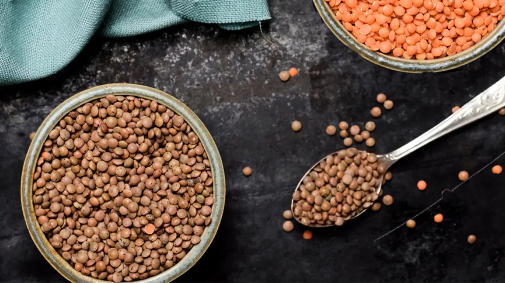
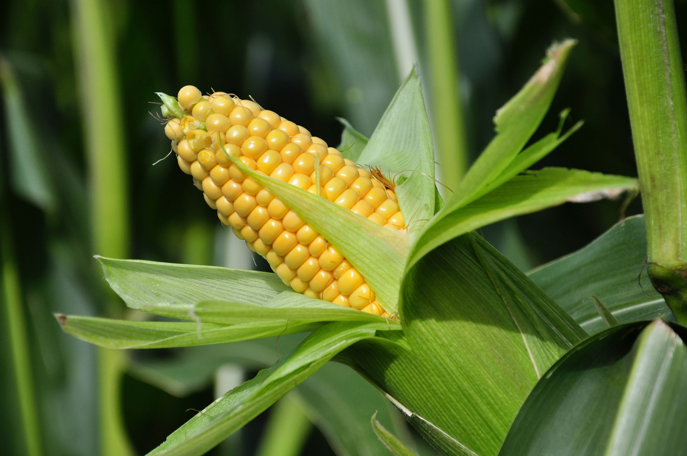
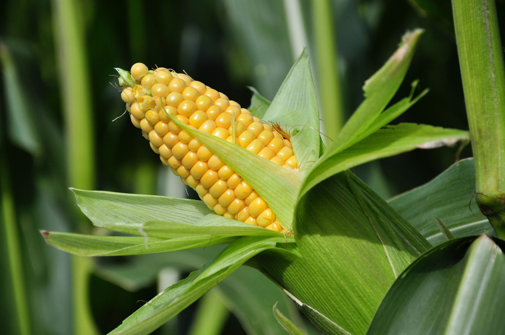

1. BARLEY / 1. जौ


Barley in Haryana is primarily a Rabi (winter) crop, sown from October to December. Haryana's barley
contributes significantly to the state's agricultural output, with a market share extending to
neighboring regions like Punjab and Uttar Pradesh. Barley thrives in well-drained loamy soils with a pH
range of 6-8. It requires moderate resources and approximately 90-120 days to mature. Demand for
Haryana's barley is driven by diverse factors, with higher demand observed in states with a preference
for barley-based products, such as breweries and the food industry, ensuring a steady market for the
crop.
हरियाणा में जौ मुख्य रूप से रबी (सर्दियों) की फसल है, जो अक्टूबर से दिसंबर तक बोई जाती है। हरियाणा का जौ
राज्य के कृषि उत्पादन में महत्वपूर्ण योगदान देता है, जिसका बाजार हिस्सा पंजाब और उत्तर प्रदेश जैसे
पड़ोसी क्षेत्रों तक फैला हुआ है। जौ 6-8 पीएच रेंज वाली अच्छी जल निकासी वाली दोमट मिट्टी में पनपता है।
इसे परिपक्व होने के लिए मध्यम संसाधनों और लगभग 90-120 दिनों की आवश्यकता होती है। हरियाणा की जौ की मांग
विभिन्न कारकों से प्रेरित है, जिन राज्यों में जौ-आधारित उत्पादों, जैसे ब्रुअरीज और खाद्य उद्योग को
प्राथमिकता दी जाती है, वहां अधिक मांग देखी गई है, जिससे फसल के लिए एक स्थिर बाजार सुनिश्चित होता है।
2. RICE / 2. चावल


Rice in Haryana is predominantly grown during the kharif season, starting from June to October, taking
advantage of the monsoon rains.
Assam is a significant contributor to India's rice production. The state's rice is both consumed locally
and contributes to the national market, with high demand in states across India.
Rice cultivation in Assam thrives in well-drained, fertile, and acidic soils, such as those found in the
Brahmaputra Valley.
The time and resources required for rice cultivation depend on the specific variety and cultivation
practices, but typically involve land preparation, planting, irrigation, and harvesting.
Apart from Assam, states like West Bengal, Uttar Pradesh, Andhra Pradesh, and Punjab have substantial
demand for rice.
हरयाणा में चावल मुख्य रूप से मानसून की बारिश का लाभ उठाते हुए, जून से अक्टूबर तक, ख़रीफ़ सीज़न के दौरान
उगाया जाता है।
भारत के चावल उत्पादन में असम का महत्वपूर्ण योगदान है। राज्य का चावल स्थानीय स्तर पर खाया जाता है और
राष्ट्रीय बाजार में योगदान देता है, जिसकी भारत भर के राज्यों में उच्च मांग है।
असम में चावल की खेती अच्छी जल निकासी वाली, उपजाऊ और अम्लीय मिट्टी में होती है, जैसे कि ब्रह्मपुत्र घाटी
में पाई जाती है।
चावल की खेती के लिए आवश्यक समय और संसाधन विशिष्ट किस्म और खेती के तरीकों पर निर्भर करते हैं, लेकिन आम
तौर पर इसमें भूमि की तैयारी, रोपण, सिंचाई और कटाई शामिल होती है।
असम के अलावा, पश्चिम बंगाल, उत्तर प्रदेश, आंध्र प्रदेश और पंजाब जैसे राज्यों में चावल की पर्याप्त मांग
है।
3. MUSTARD / 3. सरसों


Mustard in Haryana is primarily grown during the Rabi season, from October to March, taking advantage of
the post-monsoon and winter months.
Assam contributes to India's mustard production, with its mustard oil being both consumed locally and
reaching markets across the country.
Mustard plants thrive in well-drained, loamy soils with good organic content, and the state's
agro-climatic conditions support mustard cultivation.
Mustard cultivation requires moderate resources, including land preparation, seed sowing, irrigation,
and harvesting. The time from sowing to harvesting is generally around 90 to 120 days.
Besides Assam, states like Rajasthan, Uttar Pradesh, Haryana, and Madhya Pradesh exhibit significant
demand for mustard.
हरयाणा में सरसों मुख्य रूप से रबी मौसम के दौरान, अक्टूबर से मार्च तक, मानसून के बाद और सर्दियों के महीनों
का लाभ उठाते हुए उगाई जाती है।
असम भारत के सरसों उत्पादन में योगदान देता है, इसके सरसों के तेल की खपत स्थानीय स्तर पर होती है और यह देश
भर के बाजारों तक पहुंचता है।
सरसों के पौधे अच्छी जल निकासी वाली, अच्छी जैविक सामग्री वाली दोमट मिट्टी में पनपते हैं और राज्य की
कृषि-जलवायु परिस्थितियाँ सरसों की खेती का समर्थन करती हैं।
सरसों की खेती के लिए मध्यम संसाधनों की आवश्यकता होती है, जिसमें भूमि की तैयारी, बीज बोना, सिंचाई और कटाई
शामिल है। बुआई से कटाई तक का समय आम तौर पर लगभग 90 से 120 दिन का होता है।
असम के अलावा, राजस्थान, उत्तर प्रदेश, हरियाणा और मध्य प्रदेश जैसे राज्य सरसों की महत्वपूर्ण मांग
प्रदर्शित करते हैं।
4. WHEAT / 4. जूट


Wheat in Haryana is predominantly a Rabi (winter) crop, sown between October and December. The state
holds a significant market share in wheat production, supplying to neighboring regions like Punjab and
Uttar Pradesh. Wheat thrives in well-drained loamy soils with a pH range of 6-7. It requires moderate
resources and around 120-150 days to mature. Haryana's wheat contributes significantly to the demand of
major wheat-consuming states in India, ensuring a substantial market for the crop, driven by its
essential role in staple food production and various processed products in the food industry.
हरियाणा में गेहूं मुख्य रूप से रबी (सर्दियों) की फसल है, जो अक्टूबर और दिसंबर के बीच बोई जाती है। राज्य
गेहूं उत्पादन में एक महत्वपूर्ण बाजार हिस्सेदारी रखता है, जो पंजाब और उत्तर प्रदेश जैसे पड़ोसी क्षेत्रों
को आपूर्ति करता है। गेहूं 6-7 पीएच रेंज वाली अच्छी जल निकासी वाली दोमट मिट्टी में पनपता है। इसे परिपक्व
होने के लिए मध्यम संसाधनों और लगभग 120-150 दिनों की आवश्यकता होती है। हरियाणा का गेहूं भारत में प्रमुख
गेहूं उपभोग करने वाले राज्यों की मांग में महत्वपूर्ण योगदान देता है, जो मुख्य खाद्य उत्पादन और खाद्य
उद्योग में विभिन्न प्रसंस्कृत उत्पादों में इसकी आवश्यक भूमिका से प्रेरित होकर फसल के लिए एक बड़ा बाजार
सुनिश्चित करता है।
5. LENTILS / 5. मसूर


Lentils in Haryana are typically grown as a Rabi (winter) crop, sown from October to December. While
lentils might not have as dominant a market share as wheat or barley, they contribute to the state's
agricultural diversity, with sales extending to neighboring states like Punjab and Rajasthan. Lentils
prefer well-drained sandy loam soils with a slightly acidic to neutral pH. Cultivation requires moderate
resources, and lentils usually mature in about 90-120 days. The demand for Haryana's lentils is
sustained by both domestic and regional markets, ensuring a steady market for this pulse crop.
हरियाणा में मसूर की फसल आमतौर पर रबी (सर्दियों) की फसल के रूप में उगाई जाती है, जो अक्टूबर से दिसंबर तक
बोई जाती है। हालाँकि मसूर की बाजार हिस्सेदारी गेहूं या जौ जितनी प्रभावी नहीं हो सकती है, लेकिन वे राज्य
की कृषि विविधता में योगदान करते हैं, जिसकी बिक्री पंजाब और राजस्थान जैसे पड़ोसी राज्यों तक होती है। मसूर
की फसल थोड़ी अम्लीय से तटस्थ पीएच वाली अच्छी जल निकास वाली रेतीली दोमट मिट्टी को पसंद करती है। खेती के
लिए मध्यम संसाधनों की आवश्यकता होती है, और दाल आमतौर पर लगभग 90-120 दिनों में पक जाती है। हरियाणा की दाल
की मांग घरेलू और क्षेत्रीय दोनों बाजारों में बनी हुई है, जिससे इस दाल की फसल के लिए एक स्थिर बाजार
सुनिश्चित हो रहा है।
6. SUGARCANE / 6. गन्ना


Sugarcane in Haryana is primarily grown during the pre-monsoon and monsoon seasons, from October to March,
with harvesting typically taking place from January to May.
Assam contributes to India's sugarcane production, and its sugarcane is used for both local consumption
and sugar production, with a share in the national market. However, states like Uttar Pradesh,
Maharashtra, and Karnataka are major players in India's sugarcane cultivation and sugar production.
Sugarcane thrives in well-drained, fertile soils, and Assam's riverine plains provide suitable
conditions for cultivation.
Sugarcane cultivation requires substantial resources, including land preparation, planting, irrigation,
and harvesting. The crop has a growth cycle of about 10 to 12 months.
The demand for sugarcane is high in states with a well-established sugar industry, such as Uttar
Pradesh, Maharashtra, and Karnataka.
हरयाणा में गन्ना मुख्य रूप से प्री-मॉनसून और मॉनसून सीज़न के दौरान अक्टूबर से मार्च तक उगाया जाता है, जिसकी
कटाई आमतौर पर जनवरी से मई तक होती है।
असम भारत के गन्ना उत्पादन में योगदान देता है, और इसके गन्ने का उपयोग राष्ट्रीय बाजार में हिस्सेदारी के
साथ स्थानीय खपत और चीनी उत्पादन दोनों के लिए किया जाता है। हालाँकि, उत्तर प्रदेश, महाराष्ट्र और कर्नाटक
जैसे राज्य भारत की गन्ने की खेती और चीनी उत्पादन में प्रमुख खिलाड़ी हैं।
गन्ना अच्छी तरह से सूखा, उपजाऊ मिट्टी में उगता है, और असम के नदी के मैदान खेती के लिए उपयुक्त
परिस्थितियाँ प्रदान करते हैं।
गन्ने की खेती के लिए भूमि की तैयारी, रोपण, सिंचाई और कटाई सहित पर्याप्त संसाधनों की आवश्यकता होती है।
फसल का विकास चक्र लगभग 10 से 12 महीने का होता है।
उत्तर प्रदेश, महाराष्ट्र और कर्नाटक जैसे अच्छी तरह से स्थापित चीनी उद्योग वाले राज्यों में गन्ने की मांग
अधिक है।
7. CHICPEAS / 7. चने

Chickpeas in Haryana are primarily cultivated as a Rabi (winter) crop, sown from October to December.
Haryana contributes significantly to the regional market share, supplying chickpeas to neighboring
states like Punjab and Rajasthan. Chickpeas thrive in well-drained soils with a slightly acidic to
neutral pH. Cultivation requires moderate resources, and the crop typically matures in about 90-110
days. The demand for Haryana's chickpeas is robust, driven by their widespread use in various cuisines
and processed food products. The state's production ensures a steady market, meeting the demand not only
within Haryana but also in the larger northern Indian region.
हरियाणा में चने की खेती मुख्य रूप से रबी (सर्दियों) की फसल के रूप में की जाती है, जिसे अक्टूबर से दिसंबर
तक बोया जाता है। हरियाणा क्षेत्रीय बाजार हिस्सेदारी में महत्वपूर्ण योगदान देता है, पंजाब और राजस्थान
जैसे पड़ोसी राज्यों को चने की आपूर्ति करता है। चने थोड़ी अम्लीय से तटस्थ पीएच वाली अच्छी जल निकासी वाली
मिट्टी में पनपते हैं। खेती के लिए मध्यम संसाधनों की आवश्यकता होती है, और फसल आमतौर पर लगभग 90-110 दिनों
में पक जाती है। विभिन्न व्यंजनों और प्रसंस्कृत खाद्य उत्पादों में उनके व्यापक उपयोग के कारण हरियाणा के
चने की मांग मजबूत है। राज्य का उत्पादन एक स्थिर बाजार सुनिश्चित करता है, जो न केवल हरियाणा के भीतर बल्कि
बड़े उत्तरी भारतीय क्षेत्र में भी मांग को पूरा करता है।
8. COTTON / 8. कपास


Cotton in Haryana is primarily grown as a Kharif (summer) crop, with sowing usually taking place from
June to July. Haryana holds a significant market share in cotton production, supplying the fiber to
textile industries within the state and to neighboring regions such as Punjab and Rajasthan. Cotton
thrives in well-drained loamy soils with a slightly acidic to neutral pH. Cultivation requires moderate
resources, and the crop typically matures in about 150-180 days. Haryana's cotton meets both domestic
and industrial demands, playing a crucial role in supporting the textile sector, and ensuring a
consistent market for the crop in the region.
हरियाणा में कपास मुख्य रूप से ख़रीफ़ (ग्रीष्मकालीन) फसल के रूप में उगाई जाती है, जिसकी बुआई आमतौर पर जून
से जुलाई तक होती है। हरियाणा कपास उत्पादन में एक महत्वपूर्ण बाजार हिस्सेदारी रखता है, जो राज्य के भीतर
कपड़ा उद्योगों और पंजाब और राजस्थान जैसे पड़ोसी क्षेत्रों को फाइबर की आपूर्ति करता है। कपास थोड़ी अम्लीय
से तटस्थ पीएच वाली अच्छी जल निकास वाली दोमट मिट्टी में पनपती है। खेती के लिए मध्यम संसाधनों की आवश्यकता
होती है, और फसल आमतौर पर लगभग 150-180 दिनों में पक जाती है। हरियाणा का कपास घरेलू और औद्योगिक दोनों
मांगों को पूरा करता है, कपड़ा क्षेत्र को समर्थन देने और क्षेत्र में फसल के लिए एक सतत बाजार सुनिश्चित
करने में महत्वपूर्ण भूमिका निभाता है।
9. MAIZE / 9. मक्का
 

Maize in Haryana is primarily grown as a Kharif (summer) crop, with sowing typically taking place from
June to July. The state contributes significantly to the regional market share, supplying maize to
neighboring states like Punjab and Uttar Pradesh. Maize thrives in well-drained soils, preferably loamy,
with a pH range of 5.8 to 7. Cultivation requires moderate resources, and the crop usually matures in
about 90-120 days. Haryana's maize production caters to both domestic consumption and industrial uses,
including animal feed, starch, and the food processing industry. The state's consistent production
ensures a steady market for maize in the region.
हरियाणा में मक्का मुख्य रूप से ख़रीफ़ (ग्रीष्मकालीन) फसल के रूप में उगाया जाता है, जिसकी बुआई आम तौर पर
जून से जुलाई तक होती है। राज्य क्षेत्रीय बाजार हिस्सेदारी में महत्वपूर्ण योगदान देता है, पंजाब और उत्तर
प्रदेश जैसे पड़ोसी राज्यों को मक्का की आपूर्ति करता है। मक्का अच्छी तरह से सूखा मिट्टी में पनपता है,
अधिमानतः दोमट, जिसका पीएच रेंज 5.8 से 7 है। खेती के लिए मध्यम संसाधनों की आवश्यकता होती है, और फसल आमतौर
पर लगभग 90-120 दिनों में पक जाती है। हरियाणा का मक्का उत्पादन पशु चारा, स्टार्च और खाद्य प्रसंस्करण
उद्योग सहित घरेलू खपत और औद्योगिक उपयोग दोनों को पूरा करता है। राज्य का लगातार उत्पादन क्षेत्र में मक्के
के लिए एक स्थिर बाजार सुनिश्चित करता है।